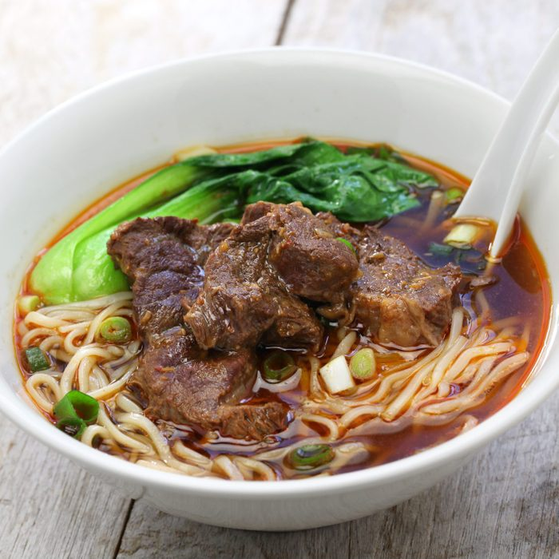

Tasty Chinese Beef Noodle Soup

There is nothing quite so comforting and satisfying as a bowl of steaming beef noodle soup. The tender bites of beef and chewy noodles in a savory, aromatic broth will warm you through and through. Chinese beef noodle soup (niu rou mian 牛肉麵) is popular across the globe, from a spot in Bangkok that’s been simmering its soup for 45 years to a pop-up in California that sells beef noodle soup kits with 8-hour cooked broth.
Ingredients
- 1-1/2 pounds beef chuck roast, cut into 2-in. cubes
- 1 tablespoon dried red peppercorn
- 3-5 slices ginger
- 2 tablespoons Shaoxing cooking wine
- 1/2 cup soy sauce
- 1 tablespoon sugar (rock sugar, turbinado sugar or honey)
- 5 star anise pods
- 2 bay leaves
- 1-2 whole scallions, roots cut off
- 1-3 teaspoons chili bean paste, depending on preferred spice level
- 2-5 dried chiles, depending on preferred spice level
- 4 cups water
- 3 cups root vegetables, cut into 2-in. cubes (my family uses half carrots and half daikon radish)
- Salt, to taste
- Scallion and/or cilantro for garnish
- Noodles of your choice
How to make!
- Heat oil in a pot on medium-low and add dried peppercorn.
- Stir a few minutes until the peppercorns are dark brown and fragrant. This is the flavor that makes your tongue tingle slightly, and makes the kitchen smell so appealing. Before the peppercorn burns, use a straining spoon to take it out, or pour the oil and peppercorn over a strainer, and transfer the fragrant oil back into the pot.
- Turn the heat to medium-high and add slices of ginger and pieces of beef. Stir for about 10 minutes until the beef is browned on all sides.
- Add cooking wine, soy sauce, sugar, scallions, star anise, bay leaves, dried chiles, chili bean paste and water to cover beef.
- Bring to a boil, then cover and simmer for 30 minutes.
- While your soup gains flavor and your beef cooks, peel and cut your root vegetables into chunks. The idea is for the beef and vegetables to be a similar size and shape once they're cooked.
- Add your root vegetables to the soup, cover, and turn the heat up briefly until the liquid boils again.
- Turn to low and simmer for at least an hour. Really, the longer the soup can cook, the softer the beef and the more flavorful the broth will be. If you have a slow cooker, you can start this beef noodle soup in the morning before work and serve it at dinner. If you’re using an Instant Pot, you can do a quick version, pressure-cooking all the ingredients together for 40 minutes.
- When the soup is almost ready, boil some water to make your noodles and chop up something green for garnish. I like scallion and cilantro, though my dad is one of those people who tastes soap when eating cilantro, so I leave it off his bowl. You can also use watercress, baby spinach, bok choy or whatever greens you have on hand.